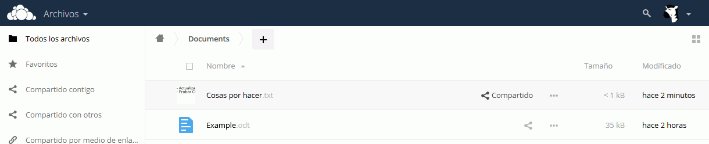
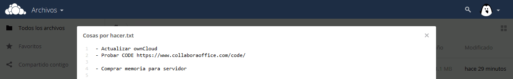

Esta lección estaba originalmente preparada para ownCloud y está pendiente de completar su actualización a Nextcloud 11.
En esta lección se proponen ejercicios para conocer y utilizar Nextcloud. Se pueden consultar las soluciones de estos ejercicios de Nextcloud, aunque se recomienda intentar realizarlos primero sin recurrir a estas soluciones.
Compruebe en Archivos que las imágenes se ven correctamente:
Compruebe en Galería que las imágenes se ven correctamente:
Comparta las imágenes con el grupo Técnicos.
Ver imágenes compartidas
Como usuario sistemas_1:
Compruebe en Galería que puede acceder a las imágenes compartidas por los otros dos usuarios:
Nextcloud (2) 4 - Crear y compartir archivos de texto
Como usuario sistemas_1 cree en la carpeta Documents un documento de texto Cosas por hacer.txt y compártalo con el grupo Técnicos:

Compruebe que el usuario programador_1 ve y puede editar el documento compartido:

Nextcloud (2) 5 - Nextcloud Desktop Client
En este ejercicio se trata de probar el cliente de escritorio.
Descargue la versión Nextcloud Desktop Client 2.2.4.2, publicada el 30 de septiembre de 2016. Se recomienda esa versión ya que estos ejercicios se han preparado para ella.
Si la versión Nextcloud Desktop Client 2.2.4.2 ya no está disponible en la web del programa, puede descargarla desde la página de Descarga de aplicaciones.
Instale y configure el cliente de escritorio para el usuario sistemas_1 para sincronizar Nextcloud con una carpeta de Mis documentos
Comprueba el funcionamiento del cliente de escritorio:
añadiendo o eliminando archivos en Nextcloud y comprobando que se añaden o elimina en la carpeta local.
añadiendo o eliminando archivos en la carpeta y comprobando que se añaden o elimina en Nextcloud.
Nextcloud (2) 6 - Conexión inalámbrica
En este ejercicio se trata de probar la conexión a Nextcloud desde un teléfono móvil (por ejemplo, mediante wifi).
Conexión mediante el navegador del móvil
Acceda con el móvil a la red wifi en la que se encuentra el ordenador en el que ha instalado Nextcloud
Compruebe que puede entrar en Nextcloud con el móvil como usuario sistemas_1 mediante la dirección https://AAA.BBB.CCC.DDD/.
Conexión mediante aplicación específica
Instale en el móvil la aplicación oficial Nextcloud: disponible en Google Play (para Android) o en la AppStore (para Apple).
Compruebe el funcionamiento de la aplicación
Nextcloud (2) 7 - Aplicaciones
En este ejercicio se trata de probar alguna de las aplicaciones libres disponibles en la tienda de Nextcloud.
Este ejercicio está por actualizar a Nextcloud (enunciados y capturas).
Aplicación Calendar
En este ejercicio se trata de probar la aplicación Calendar.
Aplicación Announcement Center
En este ejercicio se trata de probar la aplicación Announcement Center.
Audio Player
En este ejercicio se trata de probar la aplicación Audio Player.
Suba a Nextcloud la canción y compartala con el usuario programador_1.
Como usuario programador_1:
Compruebe que puede acceder a la canción para descargarla, pero no para reproducirla.
Instalar aplicación Audio Player
Como usuario administrador:
En el menú de selección de aplicaciones, abra la página de Aplicaciones
En la lista de aplicaciones, elija la opción que abre la página web del repositorio de aplicaciones para Nextcloud.
Active la aplicación Audio Player.
Reproducir canciones
Como usuario sistemas_1 o programador_1:
Compruebe que puede reproducir la canción subida:
Nextcloud (2) 8 - Temas
Este ejercicio está por actualizar a Nextcloud.
Para modificar el aspecto de ownCloud, puede crear un tema. Los temas se crean en la carpeta /themes, creando una carpeta. En esa carpeta se debe reproducir la estructura de carpetas y archivos de ownCloud. ownCloud utilizará el archivo que se guarde allí en lugar del original.
Además, en el fichero de configuración debe añadirse la referencia al nuevo tema:
 (puede usar otra de las imágenes de la página Imágenes para ejercicios)
(puede usar otra de las imágenes de la página Imágenes para ejercicios)
 (puede usar otras de las imágenes de la página Imágenes para ejercicios)
(puede usar otras de las imágenes de la página Imágenes para ejercicios)
 y equipo_webapps.png )
y equipo_webapps.png )


{kind=link}
{kind=link}
{kind=link}
{kind=link}
{kind=link}
{kind=link}